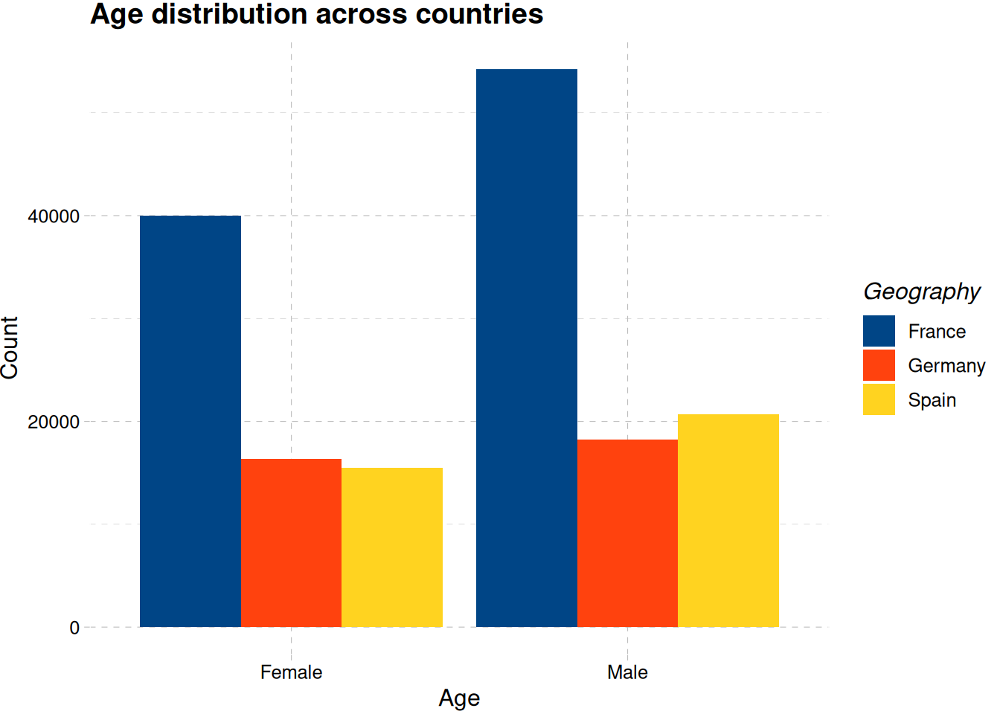
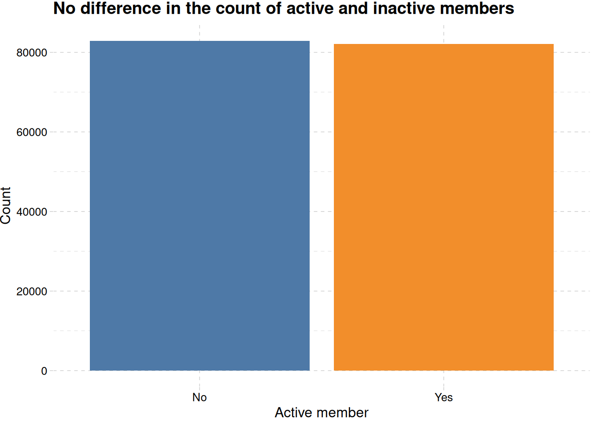
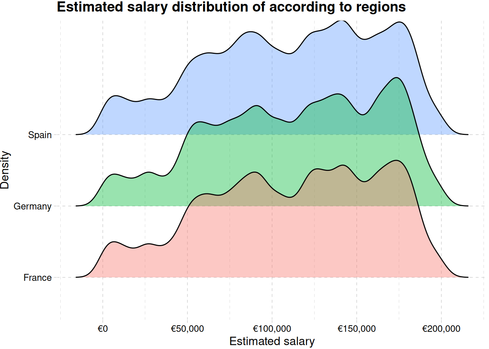

library(tidyverse)
library(ggthemes)
library(tidymodels)
library(janitor)
library(GGally)
library(patchwork)
library(wordcloud2)
library(webshot2)
library(gt)
library(scales)
library(ggridges)Bank Churn Binary Classification
Introduction

This is a beginner-friendly note to predict bank churning. Bank churning refers to the practice of repeated opening and closing of bank accounts typically to take advantage of financial incentives like sign-up bonuses, promotional offers and so on, or any other motives for opening and closing multiple accounts.
Aim of Project
The aim of this project is to predict the bank customers that will churn. Three models will be trained to predict customer churning. The models are:
logistic regression,
decision trees and,
random forest
Load Libraries
Data Definition
The bank customer churn dataset is a commonly used dataset for predicting customer churn in the banking industry. It contains information on bank customers who either left the bank or continue to be a customer. The dataset includes the following attributes:
Customer ID: A unique identifier for each customer
Surname: The customer’s surname or last name
Credit Score: A numerical value representing the customer’s credit score
Geography: The country where the customer resides (France, Spain or Germany)
Gender: The customer’s gender (Male or Female)
Age: The customer’s age.
Tenure: The number of years the customer has been with the bank
Balance: The customer’s account balance
NumOfProducts: The number of bank products the customer uses (e.g., savings account, credit card)
HasCrCard: Whether the customer has a credit card (1 = yes, 0 = no)
IsActiveMember: Whether the customer is an active member (1 = yes, 0 = no)
EstimatedSalary: The estimated salary of the customer
Exited: Whether the customer has churned (1 = yes, 0 = no).
Import the data
train_data <- read_csv("data/train.csv") |>
clean_names() |>
mutate(exited = factor(exited))
dim(train_data)[1] 165034 14The train_data is having 165034 rows and 14 columns.
Exploratory Data Analysis
Target Variable
train_data |>
mutate(exited = factor(exited, levels = c(0, 1), labels = c("No", "Yes"))) |>
ggplot(aes(exited)) +
geom_bar(fill = c("brown", "orange")) +
theme_pander() +
labs(
x = "Churned",
y = "Count",
title = "Retained account is more than churned account",
) +
scale_y_continuous(labels = label_comma())
train_data |>
mutate(exited = factor(exited, levels = c(0, 1), labels = c("No", "Yes"))) |>
ggplot(aes(exited, fill = geography)) +
geom_bar(position = "dodge") +
theme_pander() +
labs(
x = "Churned",
y = "Count",
fill = "Geography",
title = "France banks have more members that other banks",
subtitle = "Germany would have higher churn-rate than other countries"
)Figure 1 (a) reveals there are more retained accounts than churned accounts, while France is having more churned account than the other region, Germany seems to be close, and have less population than France, Figure 1 (b).
train_data |>
mutate(
exited = factor(exited, levels = c(0, 1), labels = c("No", "Yes")),
has_cr_card = factor(has_cr_card, levels = c(0, 1), labels = c("No", "Yes"))
) |>
ggplot(aes(exited, after_stat(prop), group = has_cr_card, fill = has_cr_card)) +
geom_bar(position = "dodge") +
scale_fill_tableau() +
labs(
x = "Churned", y = "Proportion",
fill = "Has credit card",
title = "Owning a credit card doesn't influence churning"
) +
scale_y_continuous(labels = label_percent()) +
theme_clean()
train_data |>
mutate(
exited = factor(exited, levels = c(0, 1), labels = c("No", "Yes")),
is_active_member = factor(is_active_member, levels = c(0, 1), labels = c("No", "Yes"))
) |>
ggplot(
aes(exited, after_stat(prop),
group = is_active_member,
fill = is_active_member)
) +
geom_bar(position = "dodge") +
scale_fill_tableau() +
labs(
x = "Churned", y = "Proportion",
fill = "Active member",
title = "Inactive members churn more than active members"
) +
scale_y_continuous(labels = label_percent()) +
theme_clean()Figure 2 (a) shows about 20% percent of the customers churning either if they have credit card or not, and Figure 2 (b) shows a clear members that are not active members churning more than active members.
train_data |>
ggplot(aes(estimated_salary, credit_score, color = factor(exited))) +
geom_point() +
scale_color_tableau(labels = c("No", "Yes")) +
facet_wrap(~geography) +
labs(
x = "Estimated Salary",
y = "Credit Score",
fill = "Churned",
title = "Chruning is not affected by credit score and estimated salary",
subtitle = "Germany has high churn compared to France and Spain"
) +
scale_x_continuous(labels = label_currency(prefix = "€")) +
theme_pander() +
theme(axis.text.x = element_text(angle = 45))Figure 3 shows German members churn at all ranges of estimated salary and credit score.
Feature Variable
Categorical Variables
customer_name <- train_data |>
filter(exited == 1) |>
group_by(surname) |>
count() |>
ungroup() |>
rename(freq = n) |>
arrange(desc(freq))
wordcloud2(customer_name, size =1.6, color = "random-light", backgroundColor = "black")Figure 4 shows customers having churned account. The account under the name Hsia have churned the most.
train_data |>
ggplot(aes(gender, fill = gender)) +
geom_bar(show.legend = F) +
labs(x = "gender", y = "Count", title = "Male members are more than females") +
scale_fill_calc() +
theme_pander()
train_data |>
ggplot(aes(gender, fill = geography)) +
geom_bar(position = "dodge") +
labs(
x = "Age",
y = "Count",
fill = "Geography",
title = "Age distribution across countries"
) +
scale_fill_calc() +
theme_pander()
Figure 5 shows there are more male customer than female customers
train_data |>
mutate(is_active_member = factor(
is_active_member,
levels = c(0, 1),
labels = c("No", "Yes"))
) |>
ggplot(aes(is_active_member, fill = is_active_member)) +
geom_bar(show.legend = F) +
labs(
x = "Active member",
y = "Count",
title = "No difference in the count of active and inactive members"
) +
scale_fill_tableau() +
theme_pander()
train_data |>
mutate(is_active_member = factor(
is_active_member,
levels = c(0, 1),
labels = c("No", "Yes"))
) |>
ggplot(aes(is_active_member, fill = gender)) +
geom_bar(position = "dodge") +
labs(
title = "Active members according to sex",
fill = "Gender",
x = "Active member", y = "count"
) +
scale_fill_colorblind() +
theme_pander()
Figure 6 shows no difference in the number of members activity, even when differentiated by their gender Figure 6 (b).
train_data |>
mutate(has_cr_card = factor(has_cr_card, levels = c(0, 1), labels = c("No", "Yes"))) |>
ggplot(aes(has_cr_card, fill = has_cr_card)) +
geom_bar(show.legend = F) +
labs(x = "Has Credit Card", y = "Count") +
scale_fill_tableau() +
theme_pander()Numeric Variables
age_distribution <- train_data |>
ggplot(aes(age)) +
geom_histogram(binwidth = 5, fill = "tomato3") +
geom_density(stat = "bin", binwidth = 5, col = "black") +
expand_limits(x = c(0, 100)) +
labs(
x = "Age",
title = "General age distribution",
y = "Count"
) +
theme_pander() +
theme(plot.title = element_text(size = 12),
plot.subtitle = element_text(size = 8))
age_distribution_sex <- train_data |>
ggplot(aes(age, col = gender)) +
geom_freqpoly(binwidth = 15) +
labs(
x = "Age",
y = "",
col = "Gender",
title = "Members 30 to 40 are higher for both sex",
subtitle = "Males are more than Females across all ages"
) +
scale_color_calc() +
theme_pander() +
theme(plot.title = element_text(size = 12),
plot.subtitle = element_text(size = 8))
age_distribution + age_distribution_sexThe highest number of account owners are between age 30 to 40 as show in ?@fig-age-distribution-1, with male members being more than female members across all ages ?@fig-age-distribution-2 .
train_data |>
ggplot(aes(credit_score)) +
geom_histogram(binwidth = 50, alpha = 0.7, fill = "tomato3") +
geom_density(stat = "bin", col = "black", binwidth = 50) +
labs(
x = "Credit Score",
y = "Density",
title = "General credit score distribution"
) +
theme_pander()
train_data |>
ggplot(aes(credit_score, geography, fill = geography)) +
geom_density_ridges(alpha = 0.5, show.legend = F) +
labs(x = "Credit Score", y = "Geography") +
scale_fill_calc() +
labs(
title = "Regional credit score distribution",
subtitle = "No difference in credit score distribution across regions"
) +
theme_pander()Figure 9 (b) shows no differences in the credit score across regions and in general Figure 9 (a)
train_data |>
mutate(tenure = factor(tenure)) |>
ggplot(aes(fct_infreq(tenure), fill = tenure)) +
geom_bar(show.legend = F) +
labs(x = "Tenure", y = "count", title = "Count of members according to tenure") +
scale_fill_calc() +
theme_pander()There’s a good distribution of old and new members Figure 10
train_data |>
ggplot(aes(estimated_salary)) +
geom_histogram(binwidth = 10000, fill = "tomato3", alpha = 0.5) +
geom_density(stat = "bin", binwidth = 10000, col = "black") +
labs(
x = "Estimated salary",
y = " Count",
title = "Multimodal estimated salary distribution"
) +
theme_pander()
train_data |>
ggplot(aes(estimated_salary, gender, fill = gender)) +
geom_density_ridges(alpha = 0.4) +
labs(
x = "Estimated salary",
y = "Density",
fill = "Gender",
title = "Estimated salary distribution of the genders"
) +
scale_x_continuous(labels = label_currency(prefix = "€")) +
theme_pander() +
theme(legend.position = "none")Picking joint bandwidth of 4720train_data |>
ggplot(aes(estimated_salary, geography, fill = geography)) +
geom_density_ridges(alpha = 0.4) +
labs(
x = "Estimated salary",
y = "Density",
fill = "Geography",
title = "Estimated salary distribution of according to regions"
) +
scale_x_continuous(labels = label_currency(prefix = "€")) +
theme_pander() +
theme(legend.position = "none")Picking joint bandwidth of 5250
Figure 11 showing multimodal distribution of estimated salary.
Correlation Plot
ggcorr(train_data)Model Workflow
Three models were used for predicting members that churned. They are:
logistic model
decision trees
random forest
The metrics for evaluation will only be the roc_auc
Data Pre-processing for Modelling
train_data_preproc <- train_data |>
select(!c(id, customer_id, surname)) |>
mutate_if(is_character, factor)
head(train_data_preproc)# A tibble: 6 × 11
credit_score geography gender age tenure balance num_of_products has_cr_card
<dbl> <fct> <fct> <dbl> <dbl> <dbl> <dbl> <dbl>
1 668 France Male 33 3 0 2 1
2 627 France Male 33 1 0 2 1
3 678 France Male 40 10 0 2 1
4 581 France Male 34 2 148883. 1 1
5 716 Spain Male 33 5 0 2 1
6 588 Germany Male 36 4 131779. 1 1
# ℹ 3 more variables: is_active_member <dbl>, estimated_salary <dbl>,
# exited <fct>Data Splitting
The data is split into three parts: - A training set - A testing set - A validation set
set.seed(234)
train_data_split <- initial_split(train_data_preproc, prop = c(.8), strata = exited)
training_data <- training(train_data_split)
validation_data <- testing(train_data_split)Model Development
The engine to be used for the pre-selected algorithms, will be shown below.
log_reg_model <-
logistic_reg() |>
set_engine("glm")
decision_tree_model <-
decision_tree(
tree_depth = tune(),
cost_complexity = tune()
) |>
set_engine("rpart") |>
set_mode("classification")
rf_model <-
rand_forest(
trees = 1000,
mtry = tune(),
min_n = tune()
) |>
set_engine("ranger") |>
set_mode("classification")Feature Engineering
Some feature engineering will be carried out for the different models, based on their specifications
log_reg_rec <-
recipe(
exited ~ .,
data = training_data
) |>
step_dummy(geography) |>
step_zv()
decision_tree_rec <-
recipe(exited ~ .,
data = training_data) |>
step_nzv()
rf_rec <-
recipe(
exited ~ .,
data = training_data
) |>
step_zv()Recipe object and model specification will be added to each model workflow
log_reg_wf <-
workflow() |>
add_model(log_reg_model) |>
add_recipe(log_reg_rec)
rand_forest_wf <-
workflow() |>
add_recipe(rf_rec) |>
add_model(rf_model)
decision_tree_wf <-
workflow() |>
add_recipe(decision_tree_rec) |>
add_model(decision_tree_model)Logistic_regression
log_reg_fit <-
log_reg_wf |>
fit(training_data)Next, we test the fit on the validation set.
log_reg_validation_pred <- predict(log_reg_fit, validation_data, type = "class") |>
bind_cols(validation_data) |>
relocate(.pred_class, .after = exited)conf_mat(log_reg_validation_pred, truth = exited, estimate = .pred_class) Truth
Prediction 0 1
0 24871 4335
1 1152 2650There are more false positive than false negative. The model predicts non-event better than event, but the accuracy is 83%
accuracy(log_reg_validation_pred, truth = exited, estimate = .pred_class)?(caption)
# A tibble: 1 × 3
.metric .estimator .estimate
<chr> <chr> <dbl>
1 accuracy binary 0.834log_reg_validation_pred |>
mutate(.pred_class = as.numeric(.pred_class)) |>
roc_curve(exited, .pred_class) |>
autoplot() +
labs(
title = str_wrap(
"Logistic regression shows low predictive capacity for churned class",
width = 70)
) +
theme_pander()Area under the curve, Figure 12 shows the predictive capability for churning is below 50%, while accuracy is high ?@tbl-log-reg-accuracy, this can be the ability to predict retention, which is not our interest. We will check the other models to see which will give our desired result
training_data_folds <- vfold_cv(training_data, v = 5, strata = exited)Decision Trees
For the decision tree, we will set a grid a not too complex, and this is due to computational resources. After that we will tune or model, collect their metrics and evaluate their performance. Parallel computing will be employed to reduce training time time.
Fit Regular Grid
set.seed(345)
tree_grid <-
grid_regular(
cost_complexity(),
tree_depth(),
levels = 5
)
tree_grid |>
count(tree_depth)# A tibble: 5 × 2
tree_depth n
<int> <int>
1 1 5
2 4 5
3 8 5
4 11 5
5 15 5Tune Grid
set.seed(234)
doParallel::registerDoParallel(cores = 5)
dt_tune <-
tune_grid(
decision_tree_wf,
grid = tree_grid,
resamples = training_data_folds
)dt_tune |>
collect_metrics() |>
head(n = 10)# A tibble: 10 × 8
cost_complexity tree_depth .metric .estimator mean n std_err .config
<dbl> <int> <chr> <chr> <dbl> <int> <dbl> <chr>
1 0.0000000001 1 accuracy binary 0.788 5 0.00000597 Prepro…
2 0.0000000001 1 roc_auc binary 0.5 5 0 Prepro…
3 0.0000000178 1 accuracy binary 0.788 5 0.00000597 Prepro…
4 0.0000000178 1 roc_auc binary 0.5 5 0 Prepro…
5 0.00000316 1 accuracy binary 0.788 5 0.00000597 Prepro…
6 0.00000316 1 roc_auc binary 0.5 5 0 Prepro…
7 0.000562 1 accuracy binary 0.788 5 0.00000597 Prepro…
8 0.000562 1 roc_auc binary 0.5 5 0 Prepro…
9 0.1 1 accuracy binary 0.788 5 0.00000597 Prepro…
10 0.1 1 roc_auc binary 0.5 5 0 Prepro…Visualizing the result will be better than the normal print
dt_tune |>
collect_metrics() |>
filter(.metric == "roc_auc") |>
mutate(tree_depth = factor(tree_depth)) |>
ggplot(aes(cost_complexity, mean, color = tree_depth)) +
geom_line(linewidth = 1, alpha = 0.4) +
labs(
x = "Cost Complexity",
y = "AUC",
col = "Tree depth",
title = "Model improves as tree depth increases",
subtitle = str_wrap("Tree depth 15 performed well, but 11 is the best", width = 50)
) +
geom_point(size = 2) +
scale_x_log10(labels = label_number()) +
scale_color_colorblind() +
theme_clean() +
expand_limits(y = c(0.5, 0.9)) +
theme(legend.position = "bottom")Our short tree with depth of 1 performed bad across all values of cost_complexity. The model improves as tree depth increases, but the best depth is 11 and not the maximum tree depth of 15 Figure 13. The top 5 candidates models are show below.
dt_tune |>
show_best("roc_auc")# A tibble: 5 × 8
cost_complexity tree_depth .metric .estimator mean n std_err .config
<dbl> <int> <chr> <chr> <dbl> <int> <dbl> <chr>
1 0.0000000001 11 roc_auc binary 0.877 5 0.000900 Preprocess…
2 0.0000000178 11 roc_auc binary 0.877 5 0.000900 Preprocess…
3 0.00000316 11 roc_auc binary 0.877 5 0.000900 Preprocess…
4 0.0000000001 8 roc_auc binary 0.868 5 0.00360 Preprocess…
5 0.0000000178 8 roc_auc binary 0.868 5 0.00360 Preprocess…We will select the best of the hyperparameter values and use it to finalize our model
best_tree <- dt_tune |>
select_best("roc_auc")
best_tree# A tibble: 1 × 3
cost_complexity tree_depth .config
<dbl> <int> <chr>
1 0.0000000001 11 Preprocessor1_Model16Before we proceed with finalizing, we will fit a random forest tree and see how it performs compare it to the decision tree model, then finalize on which is the best.
Random Forest
The right values to use, when training a single model is unknown, but we can train a group and see which turns out best.
Data Sharing for Random Forest
Our training data is large, more than 132926 rows and 11 columns, a sample of this data should be collected, and be used to train the random forest model. Parallelization will also be used here to speed up to processing time.
set.seed (222)
rand_for_resamples <- initial_split(training_data, prop = 0.1, strata = exited)
rand_for_resamples <- training(rand_for_resamples)
rand_for_resamples <- vfold_cv(rand_for_resamples, v = 10)Tuning Random Forest
set.seed(456)
doParallel::registerDoParallel(cores = 5)
rf_tune <-
tune_grid(
rand_forest_wf,
resamples = rand_for_resamples,
grid = 20
)i Creating pre-processing data to finalize unknown parameter: mtryLet’s see the result
rf_tune |>
collect_metrics() |>
filter(.metric == "roc_auc") |>
select(mtry, min_n, mean) |>
pivot_longer(
mtry:min_n,
values_to = "value",
names_to = "parameter"
) |>
ggplot(aes(value, mean, col = parameter)) +
geom_point() +
labs(
x = "Value",
y = "AUC",
title = "Low mtry and high min_n are likely to make good model"
) +
facet_wrap(~parameter, scales = "free") +
scale_color_colorblind() +
theme_clean()Tune Random Forest with Regular Grid
From the plot above, it seems low mtry (from 2 to 5) are good and high min_n (25 to 35) are good. We should a set range between this values using grid_regular for tuning one more time.
rf_grid <-
grid_regular(
min_n(range = c(25, 35)),
mtry(range = c(2, 6)),
levels = 5
)
rf_grid# A tibble: 25 × 2
min_n mtry
<int> <int>
1 25 2
2 27 2
3 30 2
4 32 2
5 35 2
6 25 3
7 27 3
8 30 3
9 32 3
10 35 3
# ℹ 15 more rowsNow we retune with the regular grid.
set.seed(347)
rand_forest_tune_reg <-
tune_grid(
rand_forest_wf,
resamples = rand_for_resamples,
grid = rf_grid
)rand_forest_tune_reg |>
collect_metrics() |>
filter(.metric == "roc_auc") |>
mutate(mtry = factor(mtry)) |>
ggplot(aes(min_n, mean, col = mtry)) +
geom_point() +
geom_line() +
labs(
y = "AUC",
title = "Model performance reduces as mtry increases",
subtitle = "Model performance generally increases as min_n increases"
) +
theme_clean()The best combination of parameters is when mtry is 2 and min_n is 30, but this can likely lead to underfitting (pretty low mtry of 2) as only two features are evaluated as candidates for each split.
rand_forest_tune_reg |>
show_best("roc_auc", n = 10)?(caption)
# A tibble: 10 × 8
mtry min_n .metric .estimator mean n std_err .config
<int> <int> <chr> <chr> <dbl> <int> <dbl> <chr>
1 2 30 roc_auc binary 0.888 10 0.00383 Preprocessor1_Model03
2 2 27 roc_auc binary 0.888 10 0.00391 Preprocessor1_Model02
3 2 25 roc_auc binary 0.888 10 0.00391 Preprocessor1_Model01
4 2 32 roc_auc binary 0.888 10 0.00390 Preprocessor1_Model04
5 2 35 roc_auc binary 0.888 10 0.00387 Preprocessor1_Model05
6 3 35 roc_auc binary 0.887 10 0.00397 Preprocessor1_Model10
7 3 32 roc_auc binary 0.887 10 0.00396 Preprocessor1_Model09
8 3 30 roc_auc binary 0.886 10 0.00405 Preprocessor1_Model08
9 3 25 roc_auc binary 0.886 10 0.00402 Preprocessor1_Model06
10 3 27 roc_auc binary 0.886 10 0.00400 Preprocessor1_Model07best_forest <-
rand_forest_tune_reg |>
select_best("roc_auc")Model Choice decision
The best model seems to be the random forest model using the roc_auc to evaluate, but giving the tendency to for the random underfit, the decision tree will be selected.
final_tree <- finalize_model(
decision_tree_model,
best_tree
)
final_treeDecision Tree Model Specification (classification)
Main Arguments:
cost_complexity = 1e-10
tree_depth = 11
Computational engine: rpart We can check the variable importance, from our model. We will first prep and juice our recipe for decision tree.
dec_prep <- prep(decision_tree_rec)
dec_tree <- juice(dec_prep)Feature Importance
library(vip)
tree_fit <- final_tree |>
set_engine("rpart") |>
fit(exited ~ ., data = dec_tree)
vip(tree_fit, aes = list(fill = "mediumaquamarine")) +
labs(
x = "importance",
y = "Features",
title = "Feature importance"
) +
theme_clean()Age, num_of_products, balance, and is_active_member are the most important features in the model Figure 14.
The model is finalized, we need to finalize the workflow, then make the last fit
Finalizing Models
tree_final_wf <- workflow() |>
add_recipe(decision_tree_rec) |>
add_model(final_tree)
tree_final_fit <-
last_fit(
tree_final_wf,
train_data_split
)tree_final_fit |>
collect_metrics("roc_auc")# A tibble: 2 × 4
.metric .estimator .estimate .config
<chr> <chr> <dbl> <chr>
1 accuracy binary 0.856 Preprocessor1_Model1
2 roc_auc binary 0.882 Preprocessor1_Model1The metrics is good and we did not overfit during tuning.
tree_final_fit |>
collect_predictions() |>
mutate(prediction_status = case_when(
exited == .pred_class ~ "Correct",
.default = "Incorrect"
)) |>
bind_cols(validation_data) |>
clean_names() |>
filter(exited_19 == 1) |>
ggplot(aes(estimated_salary, credit_score, color = prediction_status)) +
geom_point() +
scale_color_tableau() +
facet_wrap(~geography) +
labs(
x = "Estimated Salary",
y = "Credit Score",
col = "Prediction",
title = "Prediction of Exited members",
subtitle = "Model have lots of incorrect predicitions in France"
) +
scale_x_continuous(labels = label_currency(prefix = "€")) +
theme_pander() +
theme(axis.text.x = element_text(angle = 320))Prediction on New Data
First, we need to extract our model
decision_tree_final_model <- tree_final_fit |>
extract_fit_parsnip()We import the new data newly
test_data <- read_csv("data/test.csv") |>
clean_names()
head(test_data)# A tibble: 6 × 13
id customer_id surname credit_score geography gender age tenure balance
<dbl> <dbl> <chr> <dbl> <chr> <chr> <dbl> <dbl> <dbl>
1 165034 15773898 Lucchese 586 France Female 23 2 0
2 165035 15782418 Nott 683 France Female 46 2 0
3 165036 15807120 K? 656 France Female 34 7 0
4 165037 15808905 O'Donne… 681 France Male 36 8 0
5 165038 15607314 Higgins 752 Germany Male 38 10 121264.
6 165039 15672704 Pearson 593 France Female 22 9 0
# ℹ 4 more variables: num_of_products <dbl>, has_cr_card <dbl>,
# is_active_member <dbl>, estimated_salary <dbl>compare_df_cols(train_data, test_data) |>
gt()| column_name | train_data | test_data |
|---|---|---|
| age | numeric | numeric |
| balance | numeric | numeric |
| credit_score | numeric | numeric |
| customer_id | numeric | numeric |
| estimated_salary | numeric | numeric |
| exited | factor | NA |
| gender | character | character |
| geography | character | character |
| has_cr_card | numeric | numeric |
| id | numeric | numeric |
| is_active_member | numeric | numeric |
| num_of_products | numeric | numeric |
| surname | character | character |
| tenure | numeric | numeric |
Table 1 shows only the target variable missing in the test data
Prediction
exited <- predict(decision_tree_final_model, new_data = test_data)exited_customers <- exited |>
bind_cols(test_data) |>
rename("exited" = .pred_class) |>
relocate(exited, .after = id) |>
select(id, exited)write_csv(exited_customers, "olamide_submission.csv")read_csv("olamide_submission.csv")Rows: 110023 Columns: 2
── Column specification ────────────────────────────────────────────────────────
Delimiter: ","
dbl (2): id, exited
ℹ Use `spec()` to retrieve the full column specification for this data.
ℹ Specify the column types or set `show_col_types = FALSE` to quiet this message.# A tibble: 110,023 × 2
id exited
<dbl> <dbl>
1 165034 0
2 165035 1
3 165036 0
4 165037 0
5 165038 0
6 165039 0
7 165040 0
8 165041 0
9 165042 1
10 165043 0
# ℹ 110,013 more rows